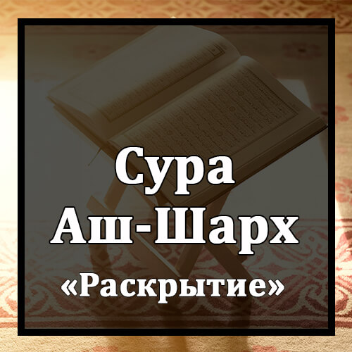

Бисмилляхир-Рахманир-Рахиим
Во имя Аллаха Милостивого и Милосердного!
Алям Нашрах Ляка Садрак.
Разве Мы не раскрыли твою грудь?
Уа Уада`на `Анка Уизрак.
и не сняли с тебя ношу,
Аль-Лязи Анкада Захрак.
которая отягощала твою спину?
Уа Рафа`на Ляка Зикрак.
Разве Мы не возвеличили твое поминание?
Фаинна Ма`аль-`Усри Йусраа.
Воистину, за каждой тягостью наступает облегчение.
Инна Ма`аль-`Усри Йусраа.
За каждой тягостью наступает облегчение.
Фа`иза Фарагта Фансаб.
Посему, как только освободишься, будь деятелен
Уа Иля Раббика Фаргаб.
и устремись к своему Господу.